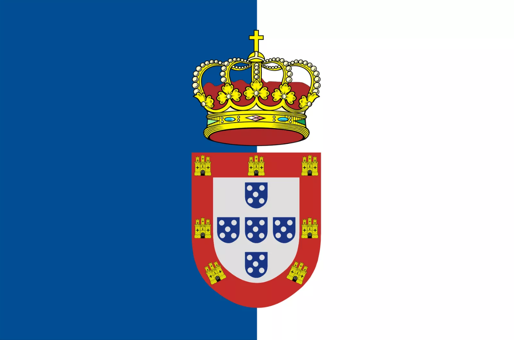

Créditos
A Reconquista Portuguesa é um jogo criado por Dário Manhanga e Gustavo Bizarro no âmbito da Unidade Curricular de Multimédia da Licenciatura em Engenharia Informática da Faculdade de Ciências e Tecnologias da Universidade de Coimbra.
Criado em maio de 2020.
Voltar